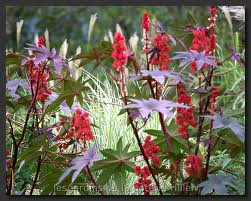

Ricin

Ricin (Ricinus communis de la famille des Euphorbiacées) Toxique et toxicité de contact.
Partie toxique pour les chats en général et le Korat en particulier :
Toute la plante surtout les graines.
Symptômes du processus pathologique :
Diarrhées, amaigrissements convulsions hyper salivation hyperthermie. Symptômes pouvant apparaître jusqu'à 3 jours après ingestion.
Origine de la toxicité (principe actif) :
Une lectine, la ricine, un alcaloïde, la ricinine.